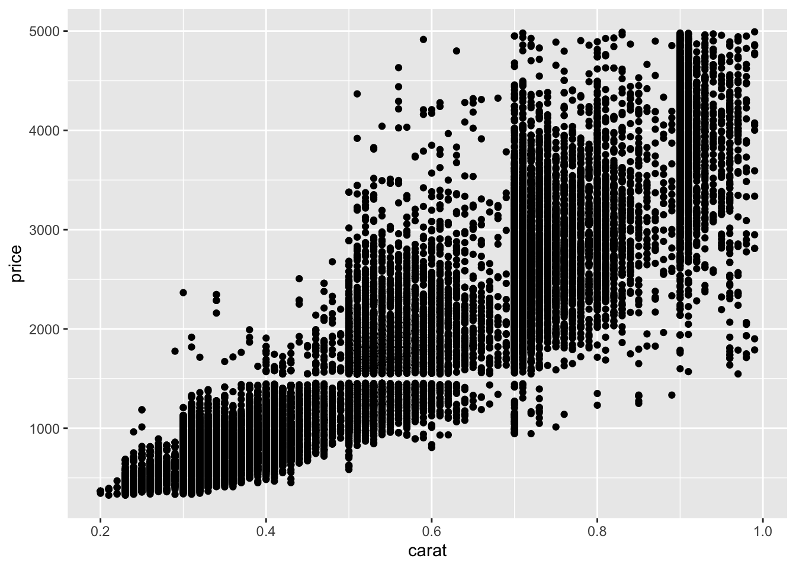
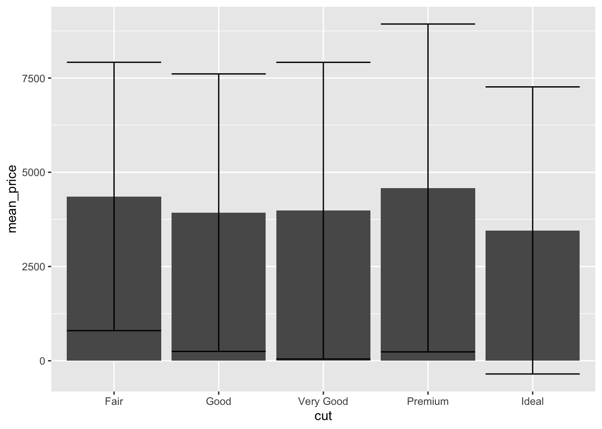
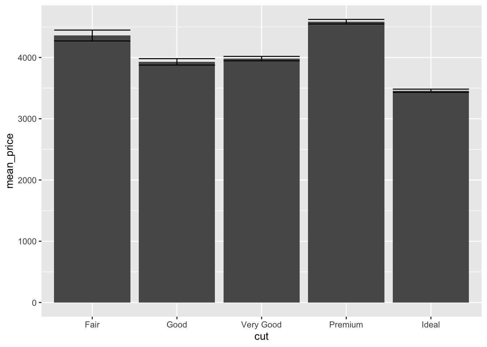

4 dplyr and ggplot
- Questions:
- How do I explore data graphically?
- Objectives:
- Using
filter()andgroup_by()to subset and scale data - Using
summarize()to get graphical summaries
- Keypoints:
- Piping filtered or summarized data to
ggplot2()can give quick graphical readouts of data.
4.1 Piping to ggplot()
The pipe operator %>% we used earlier can be used with ggplot() commands to give us a graphical view of our data. Lets try the diamonds data
diamonds %>%
ggplot() + aes(x = carat, y = price) + geom_point()
So, let’s look at that messy bottom left corner, from 0 - 1 in carat and less than 5000 in price. A filter() should sort us out
diamonds %>%
filter(carat < 1, price < 5000) %>%
ggplot() + aes(x = carat, y = price) + geom_point()
It’s easier to do this sort of zooming and filtering with dplyr than it is by setting ggplot axes.
4.1.1 Quick bar charts
dplyr also provides a quick way to make bar charts in ggplot. Although bar charts are generally far less use than jitter or scatter plots, lots of supervisors like them. Which is a shame.
We need to run group_by() and summary() and send it to ggplot’s geom_bar().
diamonds %>%
group_by(cut) %>%
summarize(mean_price = mean(price)) %>%
ggplot() + aes(x = cut, y = mean_price) + geom_bar(stat="identity")The stat = "identity" call tells ggplot to use the values passed (default behaviour is to do a count, which is a bit unexpected).
Error bars can be added by calculating the error on each group and adding it in to the table, then using the geom_errorbar() geom from ggplot. We’ll use the standard deviation from the sd() function, though any error can be used.
diamonds %>%
group_by(cut) %>%
summarise(
mean_price = mean(price),
sd_price = sd(price)
) %>%
ggplot() +
aes(x = cut, y = mean_price) +
geom_bar(stat="identity") +
geom_errorbar(
aes(
ymin = mean_price - sd_price,
ymax = mean_price + sd_price
)
)
It is helpful to look at the output from the dplyr bit to see what’s going on here.
diamonds %>%
group_by(cut) %>%
summarise(
mean_price = mean(price),
sd_price = sd(price)
)# A tibble: 5 × 3
cut mean_price sd_price
<ord> <dbl> <dbl>
1 Fair 4359. 3560.
2 Good 3929. 3682.
3 Very Good 3982. 3936.
4 Premium 4584. 4349.
5 Ideal 3458. 3808.The dplyr group_by() and summarise() returns a table with two new columns. These are the values ggplot uses. The mean_price for the bar height, the mean_price - sd_price for the lower extent of each error bar, and mean_price + sd_price for the higher extent of each error bar.
So how do we get standard error added onto the bars? Recalling that standard error is just the standard deviation divided by the square root of the sample size, and the sample size for a group would be the same as the number of things in it, which we get from the n() function we can use
diamonds %>%
group_by(cut) %>%
summarise(
mean_price = mean(price),
se_price = sd(price) / sqrt(n())
)# A tibble: 5 × 3
cut mean_price se_price
<ord> <dbl> <dbl>
1 Fair 4359. 88.7
2 Good 3929. 52.6
3 Very Good 3982. 35.8
4 Premium 4584. 37.0
5 Ideal 3458. 25.9These can be worked with as before
diamonds %>%
group_by(cut) %>%
summarise(
mean_price = mean(price),
se_price = sd(price) / sqrt(n())
) %>%
ggplot() +
aes(x = cut, y = mean_price) +
geom_bar(stat="identity") +
geom_errorbar(
aes(
ymin = mean_price - se_price,
ymax = mean_price + se_price
)
)
The figure shows how a large sample size really distorts error bar calculations! An interesting view of difference of price is given by using standard error and interpreting lack of overlap as a proxy for significance with such large sample sizes.